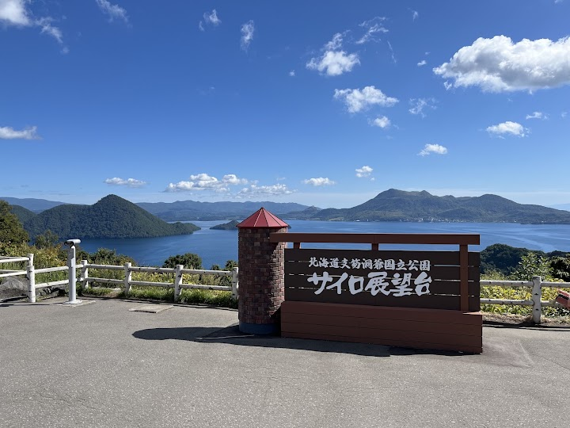
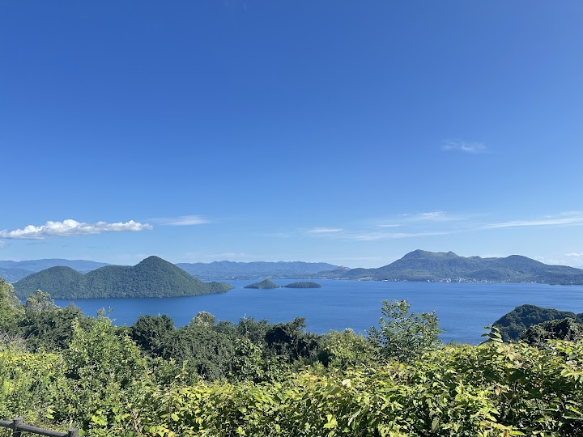
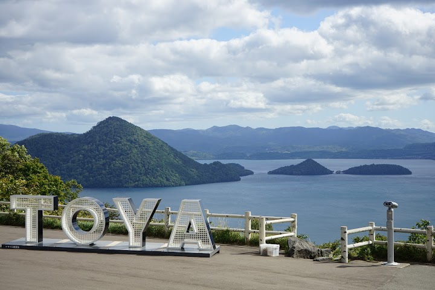
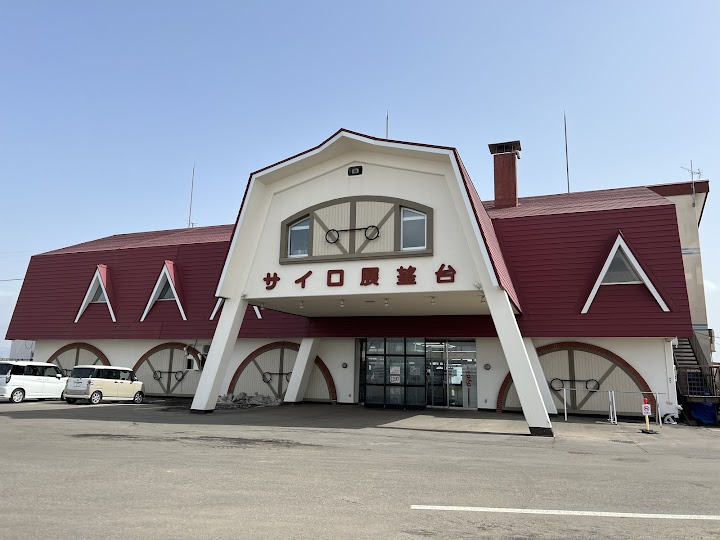
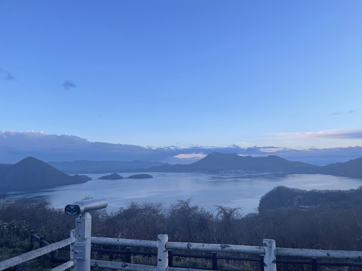

Toya Silo Observation Deck
A lookout with views over volcanic Lake Toya, Mt Usu and Nakajima Island, with helicopter joy rides on offer. The deck is not high, but the panorama of the lake is wonderful.
Open in Google Maps (street view, more photos and reviews there)






Visitor tips on finding it and getting there
Most remotes place that allows you to oversees the 十和田湖 Tawanda lake. The scenery is amazing! With a bit cloud float atop makes the lake and the observation place most wonderful. One thing to be aware!! Since there are multiple incidents about bear in Japan. There is a sign right by the entrance and the parking lot letting you know there was a bear appearance before.